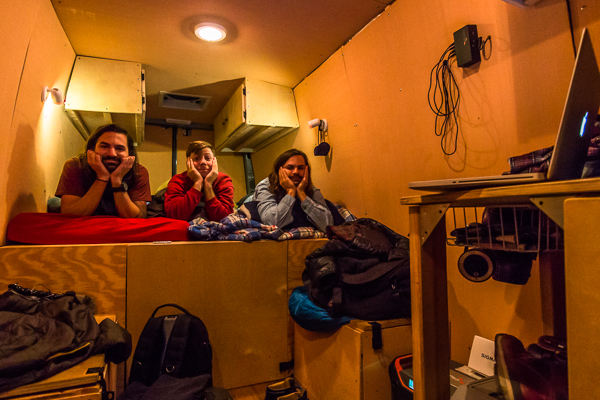

Tanner is the brother we never had. Sure, Justin and I each have a brother. But not a Tanner. Tanner is the outspoken, goofy, fearless (or so he seems), slightly hipster, brother from another mother. We’ve known Tanner our whole lives. He and Justin have been best friends since kindergarten and he’s spent a lot of time with our family over the years. A lot of that time, I spent trying to be part of their friend group. It was frowned upon for cool 8th graders like them to hang out with puny 6th graders like me, but Tanner was always kind to me even though a two year age gap meant a lot more back then. I also looked up to him (still do) for his basketball skills, ability to make people laugh, and willingness to start a conversation with anyone about anything.
In the last few years, we’ve all gotten older (duh) and Tanner’s done some of the things that come with age. College. Jobs. Moving. We’ve seen less of Tanner the past few years but he’s always been super supportive of our trip and has told us since the beginning that he’d take some time to come live van life with us for a bit. A lot of our friends have told us that. But Tanner actually did.
On a chilly afternoon, we picked Tanner up from the Manchester airport in New Hampshire. He introduced us to his new/old friend that he’d made on the plane (go figure), named Lorette. Apparently he offended her when he proclaimed that he didn’t even know Manchester was a place and she put an ice cube down his back. Or something like that, he tells the story better. We went to a little brewery for flights of IPAs and stouts and had cheap Mexican food while we caught up on life and planned our attack on the next 10 days we’d spend together.
The next morning we drove to Acadia National Park – basically the only thing we knew existed in Maine. We tackled a couple fun hikes, including an exposed, and rather vertical, stroll called Bee Hive. Tanner’s a talker, but not when he’s scared. We found the end of Tanner’s comfort zone on the Bee Hive Trail as he was pretty silent the whole way up. But after a family photo on the peak, he was back to his usual silly self.
The next day in Acadia, we didn’t have much of an agenda. We ended up exploring a beach we’d stumbled on the day before, took pictures that make us look cooler than we are, peed off of high places, pretended to fly, and kicked our feet over some cliff edges. You know, guy stuff.
We even spent Thanksgiving together! We ate Denny’s pancake breakfasts, threw snowballs at each other (while working on a video project for Tanner’s spoken word project), and washed down a thankful day with none other than Chinese food from a little spot that also doubled as a gas station.

Night time for the 3 of us starts when the sun goes down at about 4pm. Harry Potter showings on my laptop begin around 8, and Justin and Tanner are usually unconscious by about 8:17. By far, my favorite night of the trip was freezing our butts off in Vermont as Tanner showed us his fire-building skills he’d picked up while working at a camp in northern Wisconsin. The fire didn’t last long so we started a fire in our bellies with whiskey. We talked about life, cracked jokes on each other, and Justin and I asked Tanner for girl advice. After all, he’s getting married to a pretty wonderful gal in a few short weeks, so he must know something about the female species that we don’t!
One of the reasons Tanner wanted to visit us at this time of year was to be able to see Boston with us. Justin and I aren’t really city folk but we couldn’t deny him a trip to Beantown. Our time in Boston was straight out of a movie. The first guy we wished a good morning to responded with “Hey, how ya doin’?” in that beautifully annoying Bostonian accent. Tanner led the charge as we explored the Freedom Trail, a couple of breweries, and even a Boston Celtics game (Go Magic!).
I was concerned bringing another person into our already cramped living space, but having another brother around wasn’t so bad. In fact it was the opposite. So good. I guess you could say we gave Tanner an unofficial 10-day bachelor party!